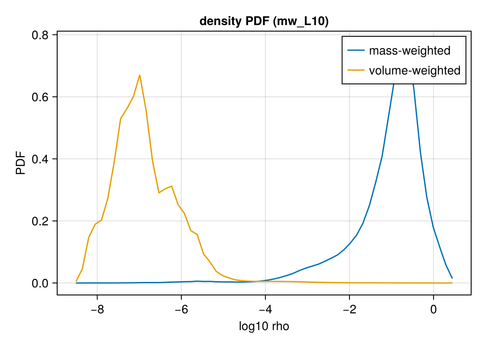

Statistics: PDFs
This page is also an executable Jupyter notebook — open / download statistics.ipynb. The notebooks run end-to-end and double as part of Mera's test suite.
pdf computes the probability distribution function of any getvar quantity over the cells (or particles) of a snapshot. The canonical use is the density PDF — the log-normal core (with a power-law high-density tail) that supersonic turbulence and self-gravity imprint on the gas, and the starting point for many star-formation models.

using Mera
base = get(ENV, "MERA_TEST_DATA", "/Volumes/FASTStorage/Simulations/Mera-Tests")
info = getinfo(300, joinpath(base, "RAMSES/mw_L10"))
gas = gethydro(info, verbose=false);*__ __ _______ ______ _______ | |_| | | _ | | _ |
| | ___| | || | |_| |
| | |___| |_||_| |
| | ___| __ | |
| ||_|| | |___| | | | _ |
|_| |_|_______|___| |_|__| |__|
Mera v1.8.0[Mera]: 2026-07-31T21:44:34.750Code: RAMSESoutput [300] summary:
mtime: 2023-04-09T05:34:09
ctime: 2025-06-21T18:31:24.020
=======================================================
simulation time: 445.89 [Myr]
boxlen: 48.0 [kpc]
ncpu: 640
ndim: 3
cosmological: false
-------------------------------------------------------
amr: true
level(s): 6 - 10 --> cellsize(s): 750.0 [pc] - 46.88 [pc]
-------------------------------------------------------
hydro: true
hydro-variables: 7 --> (:rho, :vx, :vy, :vz, :p, :scalar_00, :scalar_01)
hydro-descriptor: (:density, :velocity_x, :velocity_y, :velocity_z, :pressure, :scalar_00, :scalar_01)
γ: 1.6667
-------------------------------------------------------
gravity: true
gravity-variables: (:epot, :ax, :ay, :az)
-------------------------------------------------------
particles: true
- Nstars: 5.445150e+05
particle-variables: 7 --> (:vx, :vy, :vz, :mass, :family, :tag, :birth)
particle-descriptor: (:position_x, :position_y, :position_z, :velocity_x, :velocity_y, :velocity_z, :mass, :identity, :levelp, :family, :tag, :birth_time)
-------------------------------------------------------
rt: false
clumps: false
-------------------------------------------------------
namelist-file: ("&COOLING_PARAMS", "&SF_PARAMS", "&AMR_PARAMS", "&BOUNDARY_PARAMS", "&OUTPUT_PARAMS", "&POISSON_PARAMS", "&RUN_PARAMS", "&FEEDBACK_PARAMS", "&HYDRO_PARAMS", "&INIT_PARAMS", "&REFINE_PARAMS")
-------------------------------------------------------
timer-file: true
compilation-file: false
makefile: true
patchfile: true
=======================================================Processing files: 0%| | ETA: N/A ( N/A s/it)
Processing files: 2%|▊ | ETA: 0:01:06 ( 0.11 s/it)
Processing files: 3%|█▍ | ETA: 0:00:49 (77.97 ms/it)
Processing files: 4%|█▊ | ETA: 0:00:42 (67.39 ms/it)
Processing files: 4%|██▎ | ETA: 0:00:38 (61.76 ms/it)
Processing files: 5%|██▍ | ETA: 0:00:38 (61.69 ms/it)
Processing files: 6%|███▏ | ETA: 0:00:33 (55.56 ms/it)
Processing files: 7%|███▋ | ETA: 0:00:30 (51.18 ms/it)
Processing files: 8%|████ | ETA: 0:00:28 (48.14 ms/it)
Processing files: 9%|████▍ | ETA: 0:00:27 (46.03 ms/it)
Processing files: 10%|████▊ | ETA: 0:00:25 (44.02 ms/it)
Processing files: 10%|█████▏ | ETA: 0:00:25 (42.70 ms/it)
Processing files: 11%|█████▌ | ETA: 0:00:24 (42.48 ms/it)
Processing files: 12%|██████ | ETA: 0:00:23 (40.42 ms/it)
Processing files: 13%|██████▍ | ETA: 0:00:22 (39.56 ms/it)
Processing files: 14%|███████ | ETA: 0:00:21 (38.50 ms/it)
Processing files: 15%|███████▊ | ETA: 0:00:20 (37.30 ms/it)
Processing files: 16%|████████▏ | ETA: 0:00:20 (36.56 ms/it)
Processing files: 17%|████████▌ | ETA: 0:00:19 (36.01 ms/it)
Processing files: 18%|████████▉ | ETA: 0:00:19 (35.78 ms/it)
Processing files: 19%|█████████▎ | ETA: 0:00:18 (35.19 ms/it)
Processing files: 19%|█████████▋ | ETA: 0:00:18 (35.06 ms/it)
Processing files: 20%|██████████▏ | ETA: 0:00:18 (34.55 ms/it)
Processing files: 22%|███████████▎ | ETA: 0:00:16 (32.70 ms/it)
Processing files: 23%|███████████▊ | ETA: 0:00:16 (32.31 ms/it)
Processing files: 25%|████████████▎ | ETA: 0:00:15 (31.84 ms/it)
Processing files: 26%|████████████▊ | ETA: 0:00:15 (31.10 ms/it)
Processing files: 27%|█████████████▎ | ETA: 0:00:15 (31.10 ms/it)
Processing files: 28%|█████████████▊ | ETA: 0:00:14 (30.78 ms/it)
Processing files: 29%|██████████████▍ | ETA: 0:00:14 (30.32 ms/it)
Processing files: 30%|██████████████▉ | ETA: 0:00:13 (29.81 ms/it)
Processing files: 31%|███████████████▎ | ETA: 0:00:13 (29.79 ms/it)
Processing files: 32%|████████████████ | ETA: 0:00:13 (29.38 ms/it)
Processing files: 33%|████████████████▌ | ETA: 0:00:13 (29.28 ms/it)
Processing files: 36%|█████████████████▉ | ETA: 0:00:12 (29.05 ms/it)
Processing files: 36%|██████████████████▎ | ETA: 0:00:12 (28.99 ms/it)
Processing files: 37%|██████████████████▌ | ETA: 0:00:12 (28.95 ms/it)
Processing files: 38%|██████████████████▉ | ETA: 0:00:12 (28.99 ms/it)
Processing files: 38%|███████████████████▎ | ETA: 0:00:11 (28.90 ms/it)
Processing files: 39%|███████████████████▌ | ETA: 0:00:11 (28.92 ms/it)
Processing files: 40%|████████████████████ | ETA: 0:00:11 (28.82 ms/it)
Processing files: 41%|████████████████████▎ | ETA: 0:00:11 (29.02 ms/it)
Processing files: 42%|█████████████████████ | ETA: 0:00:11 (28.94 ms/it)
Processing files: 42%|█████████████████████▎ | ETA: 0:00:11 (28.93 ms/it)
Processing files: 43%|█████████████████████▌ | ETA: 0:00:11 (28.89 ms/it)
Processing files: 44%|█████████████████████▉ | ETA: 0:00:10 (29.06 ms/it)
Processing files: 44%|██████████████████████▎ | ETA: 0:00:10 (29.21 ms/it)
Processing files: 45%|██████████████████████▌ | ETA: 0:00:10 (29.16 ms/it)
Processing files: 46%|██████████████████████▊ | ETA: 0:00:10 (29.30 ms/it)
Processing files: 46%|███████████████████████▏ | ETA: 0:00:10 (29.50 ms/it)
Processing files: 47%|███████████████████████▍ | ETA: 0:00:10 (29.57 ms/it)
Processing files: 47%|███████████████████████▌ | ETA: 0:00:10 (29.93 ms/it)
Processing files: 48%|████████████████████████▏ | ETA: 0:00:10 (30.08 ms/it)
Processing files: 49%|████████████████████████▌ | ETA: 0:00:10 (30.14 ms/it)
Processing files: 49%|████████████████████████▊ | ETA: 0:00:10 (30.38 ms/it)
Processing files: 51%|█████████████████████████▌ | ETA: 0:00:10 (30.47 ms/it)
Processing files: 51%|█████████████████████████▊ | ETA: 0:00:10 (30.61 ms/it)
Processing files: 52%|█████████████████████████▉ | ETA: 0:00:10 (30.76 ms/it)
Processing files: 54%|██████████████████████████▉ | ETA: 0:00:09 (31.32 ms/it)
Processing files: 55%|███████████████████████████▎ | ETA: 0:00:09 (31.25 ms/it)
Processing files: 55%|███████████████████████████▌ | ETA: 0:00:09 (31.36 ms/it)
Processing files: 56%|███████████████████████████▊ | ETA: 0:00:09 (31.31 ms/it)
Processing files: 56%|████████████████████████████▏ | ETA: 0:00:09 (31.44 ms/it)
Processing files: 58%|████████████████████████████▊ | ETA: 0:00:09 (31.27 ms/it)
Processing files: 58%|█████████████████████████████ | ETA: 0:00:08 (31.22 ms/it)
Processing files: 59%|█████████████████████████████▍ | ETA: 0:00:08 (31.29 ms/it)
Processing files: 59%|█████████████████████████████▊ | ETA: 0:00:08 (31.27 ms/it)
Processing files: 60%|██████████████████████████████▏ | ETA: 0:00:08 (31.13 ms/it)
Processing files: 61%|██████████████████████████████▌ | ETA: 0:00:08 (31.04 ms/it)
Processing files: 62%|██████████████████████████████▉ | ETA: 0:00:08 (31.01 ms/it)
Processing files: 62%|███████████████████████████████▏ | ETA: 0:00:07 (30.97 ms/it)
Processing files: 63%|███████████████████████████████▌ | ETA: 0:00:07 (30.85 ms/it)
Processing files: 64%|███████████████████████████████▉ | ETA: 0:00:07 (30.85 ms/it)
Processing files: 65%|████████████████████████████████▌ | ETA: 0:00:07 (30.64 ms/it)
Processing files: 66%|████████████████████████████████▉ | ETA: 0:00:07 (30.69 ms/it)
Processing files: 67%|█████████████████████████████████▎ | ETA: 0:00:07 (30.69 ms/it)
Processing files: 68%|█████████████████████████████████▊ | ETA: 0:00:06 (30.56 ms/it)
Processing files: 69%|██████████████████████████████████▎ | ETA: 0:00:06 (30.35 ms/it)
Processing files: 70%|██████████████████████████████████▊ | ETA: 0:00:06 (30.35 ms/it)
Processing files: 70%|███████████████████████████████████▏ | ETA: 0:00:06 (30.31 ms/it)
Processing files: 71%|███████████████████████████████████▊ | ETA: 0:00:06 (30.08 ms/it)
Processing files: 72%|████████████████████████████████████▏ | ETA: 0:00:05 (30.04 ms/it)
Processing files: 73%|████████████████████████████████████▊ | ETA: 0:00:05 (29.85 ms/it)
Processing files: 75%|█████████████████████████████████████▍ | ETA: 0:00:05 (29.73 ms/it)
Processing files: 76%|█████████████████████████████████████▊ | ETA: 0:00:05 (29.64 ms/it)
Processing files: 77%|██████████████████████████████████████▍ | ETA: 0:00:04 (29.50 ms/it)
Processing files: 78%|██████████████████████████████████████▊ | ETA: 0:00:04 (29.47 ms/it)
Processing files: 78%|███████████████████████████████████████▏ | ETA: 0:00:04 (29.41 ms/it)
Processing files: 80%|███████████████████████████████████████▊ | ETA: 0:00:04 (29.22 ms/it)
Processing files: 80%|████████████████████████████████████████▎ | ETA: 0:00:04 (29.08 ms/it)
Processing files: 81%|████████████████████████████████████████▊ | ETA: 0:00:03 (29.07 ms/it)
Processing files: 82%|█████████████████████████████████████████▏ | ETA: 0:00:03 (28.99 ms/it)
Processing files: 83%|█████████████████████████████████████████▌ | ETA: 0:00:03 (28.96 ms/it)
Processing files: 84%|██████████████████████████████████████████ | ETA: 0:00:03 (28.83 ms/it)
Processing files: 85%|██████████████████████████████████████████▍ | ETA: 0:00:03 (28.76 ms/it)
Processing files: 85%|██████████████████████████████████████████▊ | ETA: 0:00:03 (28.75 ms/it)
Processing files: 86%|███████████████████████████████████████████▎ | ETA: 0:00:02 (28.62 ms/it)
Processing files: 87%|███████████████████████████████████████████▋ | ETA: 0:00:02 (28.57 ms/it)
Processing files: 88%|████████████████████████████████████████████ | ETA: 0:00:02 (28.53 ms/it)
Processing files: 89%|████████████████████████████████████████████▎ | ETA: 0:00:02 (28.52 ms/it)
Processing files: 89%|████████████████████████████████████████████▋ | ETA: 0:00:02 (28.51 ms/it)
Processing files: 90%|████████████████████████████████████████████▉ | ETA: 0:00:02 (28.61 ms/it)
Processing files: 93%|██████████████████████████████████████████████▌ | ETA: 0:00:01 (28.35 ms/it)
Processing files: 94%|██████████████████████████████████████████████▉ | ETA: 0:00:01 (28.33 ms/it)
Processing files: 94%|███████████████████████████████████████████████▎ | ETA: 0:00:01 (28.36 ms/it)
Processing files: 95%|███████████████████████████████████████████████▌ | ETA: 0:00:01 (28.36 ms/it)
Processing files: 96%|███████████████████████████████████████████████▊ | ETA: 0:00:01 (28.38 ms/it)
Processing files: 96%|████████████████████████████████████████████████▎ | ETA: 0:00:01 (28.43 ms/it)
Processing files: 97%|████████████████████████████████████████████████▌ | ETA: 0:00:01 (28.48 ms/it)
Processing files: 98%|████████████████████████████████████████████████▊ | ETA: 0:00:00 (28.47 ms/it)
Processing files: 98%|█████████████████████████████████████████████████ | ETA: 0:00:00 (28.51 ms/it)
Processing files: 99%|█████████████████████████████████████████████████▎| ETA: 0:00:00 (28.68 ms/it)
Processing files: 99%|█████████████████████████████████████████████████▋| ETA: 0:00:00 (28.69 ms/it)
Processing files: 99%|█████████████████████████████████████████████████▉| ETA: 0:00:00 (28.77 ms/it)
Processing files: 100%|██████████████████████████████████████████████████| Time: 0:00:18 (28.71 ms/it)
✓ File processing complete! Combining results...P = pdf(gas, :rho) # mass-weighted (default)
Pv = pdf(gas, :rho; weight=:volume) # volume-weighted
println("nbins : ", length(P.pdf))
println("sum P dln(rho) (logbins) ≈ 1 : ", sum(P.pdf .* diff(log10.(P.edges))))
println("rho range : ", extrema(P.centers))nbins : 60sum P dln(rho) (logbins) ≈ 1 : 0.9999999999999999
rho range : (3.117453040888466e-9, 2.7960968598850635)What it returns
pdf returns a NamedTuple (centers, edges, pdf, logbins, quantity, unit, weight):
centers/edges— bin centres / edges, in the quantity's units.pdf— a probability density on the binning axis. Withlogbins=true(the default) the axis islog10(quantity), sopdfis a density per dex; withlogbins=falseit is a density per unit. Either way it is normalised to unit area:sum(P.pdf .* diff(log10.(P.edges))) ≈ 1 # logbins sum(P.pdf .* diff(P.edges)) ≈ 1 # linear bins
Weighting
The weight decides what the PDF describes — and the two weightings tell different stories (as in the figure):
weight=:mass(default) — "how much mass is at each density"; peaks at high density.weight=:volume— "how much volume is at each density"; the volume-weighted density PDF is the one compared with turbulence theory (the log-normal).weight=:cells/:count— number-weighted (every cell counts equally).
Options
| keyword | default | meaning |
|---|---|---|
weight | :mass | :mass, :volume, or :cells/:count |
norm | :density | :density (area = 1), :probability (Σ = 1), :peak (max = 1), or :count/:none (raw weighted counts) |
logbins | true | log-spaced bins over log10(quantity) (quantity must be > 0) |
bins | 60 | number of bins |
valrange | data range | (min, max) of the quantity |
unit | :standard | unit of quantity |
mask | [false] | restrict to selected cells/particles |
The norm choices answer different questions: :density is the proper (bin-width-independent) PDF for comparing against theory or different binnings; :probability gives the mass/volume fraction in each bin; :peak compares shapes regardless of amplitude; :count keeps the raw weighted histogram.
It works on any quantity, not just density — e.g. pdf(gas, :T) (temperature), pdf(gas, :mach) (Mach number), pdf(gas, :p) (pressure). Combine with subregion or a mask to restrict to a region, and with timeseries to watch a PDF evolve.
Any data type — and projected 2D maps
pdf is generic over the data object, so it works on hydro, particle, gravity, and RT data — any quantity/weight getvar supports. For a signed field (the potential :epot, a velocity component) pass logbins=false, since log bins need positive values.
Pass a projection result and pdf takes the PDF of the 2D map's pixels — with :sd this is the column-density PDF (N-PDF), a standard observational diagnostic. Weight by :area (default, every pixel equal), :value, or another map key; a raw matrix works too (pdf(p.maps[:sd])):
parts = getparticles(info, verbose=false)
Pp = pdf(parts, :vx; weight=:mass, logbins=false) # particle velocity PDF
println("particle vx PDF bins : ", length(Pp.pdf))
grav = getgravity(info, verbose=false)
Pe = pdf(grav, :epot; weight=:volume, logbins=false) # potential PDF
println("epot PDF bins : ", length(Pe.pdf))
p = projection(gas, :sd; verbose=false)
N = pdf(p, :sd) # area-weighted N-PDF of the map
println("map N-PDF bins : ", length(N.pdf))particle vx PDF bins : 60Processing files: 0%| | ETA: N/A ( N/A s/it)
Processing files: 1%|▍ | ETA: 0:00:42 (66.64 ms/it)
Processing files: 2%|▊ | ETA: 0:00:31 (49.73 ms/it)
Processing files: 4%|█▊ | ETA: 0:00:21 (34.07 ms/it)
Processing files: 4%|██▎ | ETA: 0:00:20 (32.47 ms/it)
Processing files: 5%|██▋ | ETA: 0:00:19 (31.11 ms/it)
Processing files: 6%|███ | ETA: 0:00:18 (29.37 ms/it)
Processing files: 7%|███▋ | ETA: 0:00:16 (27.33 ms/it)
Processing files: 8%|████ | ETA: 0:00:15 (26.19 ms/it)
Processing files: 9%|████▌ | ETA: 0:00:15 (25.43 ms/it)
Processing files: 10%|█████▏ | ETA: 0:00:14 (24.29 ms/it)
Processing files: 12%|█████▊ | ETA: 0:00:13 (23.48 ms/it)
Processing files: 12%|██████▎ | ETA: 0:00:13 (23.04 ms/it)
Processing files: 13%|██████▊ | ETA: 0:00:13 (22.67 ms/it)
Processing files: 15%|███████▍ | ETA: 0:00:12 (21.84 ms/it)
Processing files: 16%|████████ | ETA: 0:00:12 (21.63 ms/it)
Processing files: 17%|████████▍ | ETA: 0:00:12 (21.98 ms/it)
Processing files: 18%|████████▉ | ETA: 0:00:11 (21.76 ms/it)
Processing files: 19%|█████████▍ | ETA: 0:00:11 (21.52 ms/it)
Processing files: 20%|█████████▉ | ETA: 0:00:11 (21.21 ms/it)
Processing files: 21%|██████████▌ | ETA: 0:00:11 (20.98 ms/it)
Processing files: 23%|███████████▍ | ETA: 0:00:10 (20.39 ms/it)
Processing files: 24%|████████████ | ETA: 0:00:10 (20.06 ms/it)
Processing files: 25%|████████████▌ | ETA: 0:00:10 (19.86 ms/it)
Processing files: 26%|█████████████ | ETA: 0:00:09 (19.69 ms/it)
Processing files: 28%|█████████████▊ | ETA: 0:00:09 (19.39 ms/it)
Processing files: 29%|██████████████▎ | ETA: 0:00:09 (19.23 ms/it)
Processing files: 30%|██████████████▉ | ETA: 0:00:09 (19.11 ms/it)
Processing files: 31%|███████████████▌ | ETA: 0:00:08 (19.01 ms/it)
Processing files: 32%|████████████████▎ | ETA: 0:00:08 (18.79 ms/it)
Processing files: 34%|████████████████▊ | ETA: 0:00:08 (18.83 ms/it)
Processing files: 35%|█████████████████▍ | ETA: 0:00:08 (18.87 ms/it)
Processing files: 36%|██████████████████ | ETA: 0:00:08 (18.81 ms/it)
Processing files: 37%|██████████████████▌ | ETA: 0:00:08 (18.70 ms/it)
Processing files: 38%|███████████████████ | ETA: 0:00:07 (18.75 ms/it)
Processing files: 39%|███████████████████▌ | ETA: 0:00:07 (18.71 ms/it)
Processing files: 40%|███████████████████▉ | ETA: 0:00:07 (18.76 ms/it)
Processing files: 41%|████████████████████▍ | ETA: 0:00:07 (18.86 ms/it)
Processing files: 42%|████████████████████▉ | ETA: 0:00:07 (18.85 ms/it)
Processing files: 42%|█████████████████████▎ | ETA: 0:00:07 (18.90 ms/it)
Processing files: 43%|█████████████████████▋ | ETA: 0:00:07 (19.05 ms/it)
Processing files: 44%|██████████████████████▎ | ETA: 0:00:07 (19.24 ms/it)
Processing files: 45%|██████████████████████▋ | ETA: 0:00:07 (19.52 ms/it)
Processing files: 47%|███████████████████████▌ | ETA: 0:00:07 (19.73 ms/it)
Processing files: 48%|███████████████████████▊ | ETA: 0:00:07 (19.86 ms/it)
Processing files: 48%|████████████████████████ | ETA: 0:00:07 (19.97 ms/it)
Processing files: 49%|████████████████████████▍ | ETA: 0:00:07 (20.07 ms/it)
Processing files: 50%|████████████████████████▊ | ETA: 0:00:07 (20.24 ms/it)
Processing files: 50%|█████████████████████████▏ | ETA: 0:00:06 (20.28 ms/it)
Processing files: 51%|█████████████████████████▍ | ETA: 0:00:06 (20.42 ms/it)
Processing files: 51%|█████████████████████████▋ | ETA: 0:00:06 (20.55 ms/it)
Processing files: 52%|██████████████████████████ | ETA: 0:00:06 (20.68 ms/it)
Processing files: 53%|██████████████████████████▍ | ETA: 0:00:06 (20.77 ms/it)
Processing files: 53%|██████████████████████████▊ | ETA: 0:00:06 (20.79 ms/it)
Processing files: 54%|███████████████████████████▏ | ETA: 0:00:06 (20.90 ms/it)
Processing files: 55%|███████████████████████████▌ | ETA: 0:00:06 (21.00 ms/it)
Processing files: 56%|████████████████████████████▏ | ETA: 0:00:06 (21.05 ms/it)
Processing files: 57%|████████████████████████████▌ | ETA: 0:00:06 (21.12 ms/it)
Processing files: 58%|█████████████████████████████ | ETA: 0:00:06 (21.09 ms/it)
Processing files: 59%|█████████████████████████████▌ | ETA: 0:00:06 (21.09 ms/it)
Processing files: 60%|█████████████████████████████▉ | ETA: 0:00:05 (21.10 ms/it)
Processing files: 61%|██████████████████████████████▍ | ETA: 0:00:05 (21.02 ms/it)
Processing files: 62%|██████████████████████████████▉ | ETA: 0:00:05 (20.98 ms/it)
Processing files: 63%|███████████████████████████████▍ | ETA: 0:00:05 (21.01 ms/it)
Processing files: 63%|███████████████████████████████▋ | ETA: 0:00:05 (21.28 ms/it)
Processing files: 64%|████████████████████████████████ | ETA: 0:00:05 (21.31 ms/it)
Processing files: 65%|████████████████████████████████▋ | ETA: 0:00:05 (21.22 ms/it)
Processing files: 66%|█████████████████████████████████▎ | ETA: 0:00:05 (21.13 ms/it)
Processing files: 68%|█████████████████████████████████▊ | ETA: 0:00:04 (21.06 ms/it)
Processing files: 68%|██████████████████████████████████▏ | ETA: 0:00:04 (21.05 ms/it)
Processing files: 70%|██████████████████████████████████▊ | ETA: 0:00:04 (20.97 ms/it)
Processing files: 71%|███████████████████████████████████▍ | ETA: 0:00:04 (20.87 ms/it)
Processing files: 72%|████████████████████████████████████ | ETA: 0:00:04 (20.84 ms/it)
Processing files: 73%|████████████████████████████████████▊ | ETA: 0:00:04 (20.68 ms/it)
Processing files: 75%|█████████████████████████████████████▍ | ETA: 0:00:03 (20.57 ms/it)
Processing files: 76%|█████████████████████████████████████▉ | ETA: 0:00:03 (20.52 ms/it)
Processing files: 77%|██████████████████████████████████████▌ | ETA: 0:00:03 (20.43 ms/it)
Processing files: 78%|███████████████████████████████████████ | ETA: 0:00:03 (20.37 ms/it)
Processing files: 80%|███████████████████████████████████████▊ | ETA: 0:00:03 (20.25 ms/it)
Processing files: 81%|████████████████████████████████████████▎ | ETA: 0:00:03 (20.20 ms/it)
Processing files: 82%|█████████████████████████████████████████ | ETA: 0:00:02 (20.14 ms/it)
Processing files: 83%|█████████████████████████████████████████▌ | ETA: 0:00:02 (20.07 ms/it)
Processing files: 84%|██████████████████████████████████████████ | ETA: 0:00:02 (20.03 ms/it)
Processing files: 85%|██████████████████████████████████████████▌ | ETA: 0:00:02 (20.03 ms/it)
Processing files: 86%|███████████████████████████████████████████ | ETA: 0:00:02 (20.00 ms/it)
Processing files: 87%|███████████████████████████████████████████▋ | ETA: 0:00:02 (19.95 ms/it)
Processing files: 88%|████████████████████████████████████████████▎ | ETA: 0:00:01 (19.88 ms/it)
Processing files: 90%|████████████████████████████████████████████▊ | ETA: 0:00:01 (19.88 ms/it)
Processing files: 90%|█████████████████████████████████████████████▏ | ETA: 0:00:01 (19.91 ms/it)
Processing files: 91%|█████████████████████████████████████████████▌ | ETA: 0:00:01 (20.07 ms/it)
Processing files: 92%|██████████████████████████████████████████████ | ETA: 0:00:01 (20.06 ms/it)
Processing files: 93%|██████████████████████████████████████████████▍ | ETA: 0:00:01 (20.19 ms/it)
Processing files: 94%|███████████████████████████████████████████████ | ETA: 0:00:01 (20.26 ms/it)
Processing files: 95%|███████████████████████████████████████████████▌ | ETA: 0:00:01 (20.25 ms/it)
Processing files: 96%|███████████████████████████████████████████████▉ | ETA: 0:00:01 (20.26 ms/it)
Processing files: 97%|████████████████████████████████████████████████▎ | ETA: 0:00:00 (20.29 ms/it)
Processing files: 97%|████████████████████████████████████████████████▋ | ETA: 0:00:00 (20.38 ms/it)
Processing files: 98%|████████████████████████████████████████████████▉ | ETA: 0:00:00 (20.45 ms/it)
Processing files: 99%|█████████████████████████████████████████████████▍| ETA: 0:00:00 (20.46 ms/it)
Processing files: 99%|█████████████████████████████████████████████████▊| ETA: 0:00:00 (20.51 ms/it)
Processing files: 100%|██████████████████████████████████████████████████| Time: 0:00:13 (20.54 ms/it)
✓ File processing complete! Combining results...epot PDF bins : 60map N-PDF bins : 60`pdf` is also exported by `Distributions.jl`; if you `using` both packages, call
`Mera.pdf`.Plot the density PDF
using CairoMakie
fig = Figure(size=(560,400))
ax = Axis(fig[1,1], title="density PDF (mw_L10)", xlabel="log10 rho", ylabel="PDF")
lines!(ax, log10.(P.centers), P.pdf, label="mass-weighted")
lines!(ax, log10.(Pv.centers), Pv.pdf, label="volume-weighted")
axislegend(ax); fig
Planned
Density/velocity power spectra and structure functions are planned as a follow-up; they need an FFT backend and will ship as a package extension (using FFTW), the same way a FITS exporter uses FITSIO. Many derived quantities are already available through getvar — e.g. :freefall_time, :jeanslength/:jeansmass, :virial_parameter_local, the sound speed :cs, and the Mach numbers :mach*.
See also
getvar— the quantities you can take a PDF of (and the derived timescales).profile— radial/quantity profiles (means in bins), the complementary view.timeseries— evolve a PDF across snapshots.